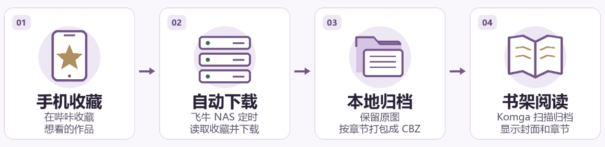
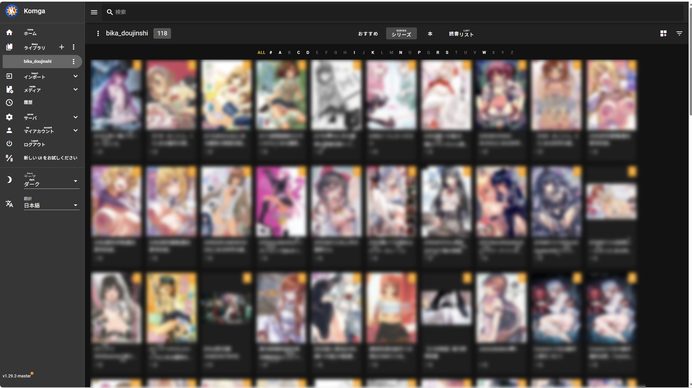
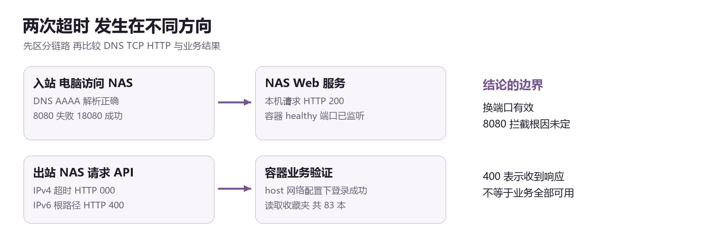
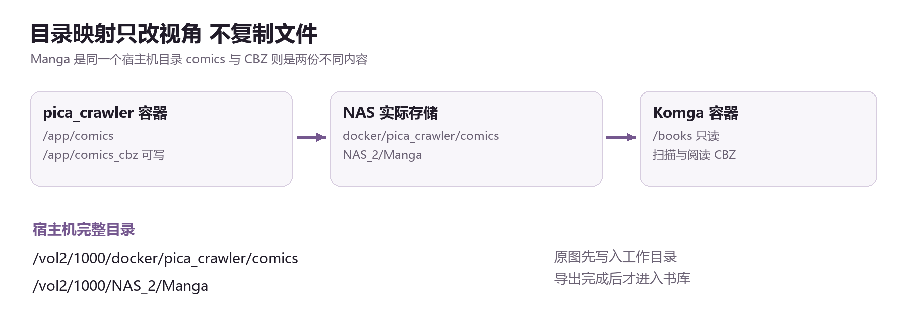
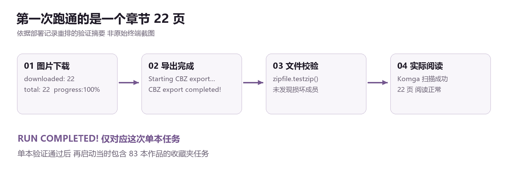
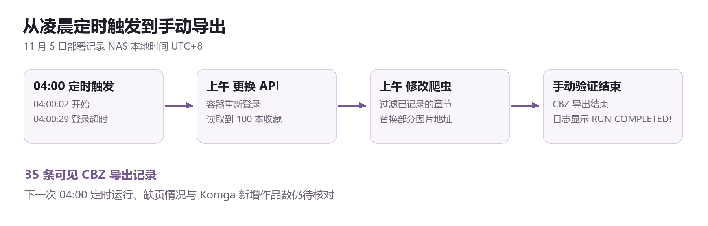
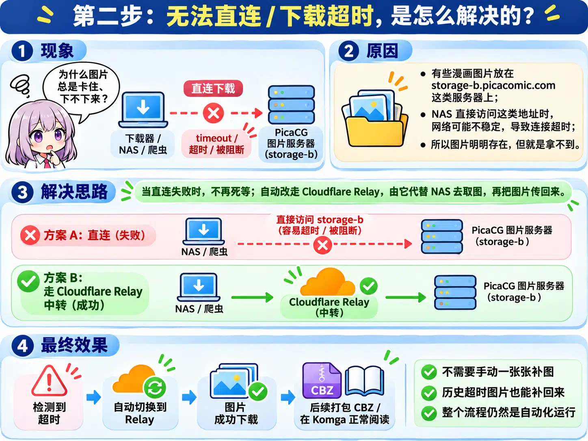
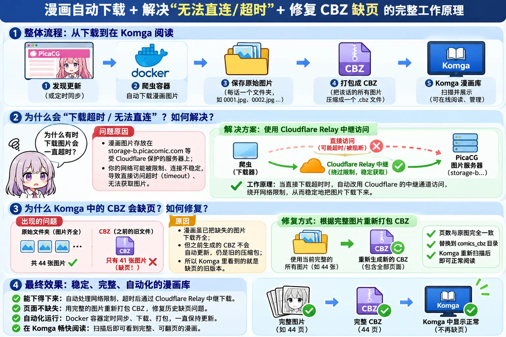

几个月前我把老家的联想台式机改造成了一台飞牛 NAS，折腾了公网 IPv6、DDNS 和 iCloud 照片备份。正如网上说的，人一旦开始折腾就停不下来，这段时间我在NAS上部署了qq聊天机器人，Stash视频库等功能。最近我把眼光放在自己硬盘存储的，和网上收藏却没下载的无数同人志。
我的想法其实很简单：在手机上看到喜欢的漫画，点一下收藏，家里的 NAS 便负责把文件下载下来，整理成能阅读的格式；以后换手机或者原来的服务出了问题，也不至于让收藏跟着消失。而打开这些文件时，我又不希望面对一层套一层的文件夹，最好像 NeatReader 那样，有封面、有书架，点进去便可以阅读。
听起来只是给 NAS 多装两个 Docker，实际过程却相当曲折。从源码构建，到公网端口不通，再到浏览器反复弹出认证窗口，最后索性更换下载方案，前后又给我补了一课。下面便把这次搭建的经过记录下来，也给以后重新部署时的自己留一份说明。


一 同人志的归处
这也延续了我当初搭 NAS 时的想法，能自己留住的东西，就尽量留在自己手里。我家里攒了不少同人志，有些是在日本逛店时买的，有些是后来从网上海淘回来的，还有相当一部分没来得及扫描归档。有些系列早就停更了，有些本子也已经绝版，网上几乎找不到扫描版。哪天弄丢了，想再买一本，说不定只能指望秋叶原某家二手书店的仓库里还躺着一册。对我来说，手上这本差不多就是孤本了。
硬盘里也攒了不少漫画，但存进 NAS 只是第一步。哪天硬盘坏了，或者自己一不小心删错了东西，这些年收集的文件，连同书库配置和阅读进度，都可能一起丢掉。纸本得找时间慢慢扫，已经存下来的东西，也得在另一块硬盘上留一份。毕竟有些本子，丢了就真的找不回来了。
二 从网页下载器到第一本书
我起初选的是带网页的下载器，想着用浏览器搜索、点下载会省事。程序在 NAS 上已经跑起来了，我在学校却连不上它。换了对外端口，页面终于打开，浏览器又反复弹出认证窗口。同一组凭据在测试请求里能用，网页却还是过不去。我没查到具体是哪条请求触发了弹窗，便重新想了一遍自己每天会怎样用这个系统。
发现作品和点收藏，本来就在手机上完成。这样一来，NAS 上的下载器只需按时读列表，跑完一轮就退出。我换成了 pica_crawler，把书架留给 Komga。换项目之后还有一段路要查。学校的电脑能不能连回家，和家里的 NAS 能不能连到漫画服务器，是两个方向。分开测试后，IPv4 还在超时，IPv6 已经收到了 API 的响应。接着我在容器里实际登录，读到了 83 本收藏。
第一轮我只挑了一本 22 页的作品。图片先存进工作目录，下载结束后再把每一话打成一个 CBZ 压缩包。我留着原图，万一哪一页没下来，后面还有机会补。Komga 则只读归档目录。等我确认压缩包能打开，终于可以翻到那一本的第一张图，这时才敢把范围放到整个收藏夹。
三 从文件夹到魔女档案室
我最期待的变化，是不用再对着硬盘上一串文件名猜哪本是哪本。Komga 扫出封面和系列以后，收藏才有了书架的样子。批量任务刚开始时，终端已经刷过一排 100%，书架却还没有动静。我后来才弄清楚，图片会先落地，爬虫得等下载阶段结束才集中导出。日志里的进度走在前面，书架要等到文件真正写进去。
我给这间书库起名叫“魔女档案室”。从六轩岛的小站到这次搭书架，我总忍不住把《海猫鸣泣之时》的意象放进自己做的东西里。深黑背景、暗紫面板和一点古金色，浏览时像在自己的收藏室里。真正点进去阅读，我还是希望界面尽量安静，把位置让给画面。


四 凌晨四点的同步任务
等一轮手动下载能走完，我给 NAS 设了凌晨四点的任务。11 月 5 日，日志在 04:00:02 准时写下“开始自动同步收藏夹”。我以为醒来就能看到新书，结果 27 秒后它已经退出了。我手动跑了一次，才发现程序卡在登录，连收藏列表都没读到。
换上备用 API 后，容器重新登录成功，读到的收藏从 83 本变成了 100 本。接着我又发现，旧图片虽然会被本地文件检查跳过，程序仍要一遍遍查询那些已经完成的章节。我把判断提到了章节这一级，先查下载记录，留下还没处理过的章节。遇到旧归档缺页，仍要按页码另行核对。
登录恢复以后，部分图片依然超时。作品和章节是从 API 读到的，真正的图片会从另外的服务器下载。我换了其中一个图片域名，样本能取回来，可另一些链接又跳回原来超时的服务器。手动验证最后跑到了导出结束，日志里能数到 35 条 CBZ 导出记录。一部作品可以有好几话，所以书架新增了多少本，还得等扫描后按系列数。
五 补上归档里的那一页
我想到给图片下载留一条备用路。平时让 NAS 直连，某一页超时了，再交给 Cloudflare 上的中继去取。它只负责图片，账号登录和收藏列表仍由家里的爬虫处理。至于中继能不能取到直连失败的那些图，我想先挑一话缺页的作品试一遍。
就算原图补齐了，旧 CBZ 也还在原地。比如本来有 44 页的一话，第一次只打进了 41 页，后来把三张补进图片目录，Komga 打开的仍然是那份旧归档。我还得按页码重新打包，核对图片和页数，再让书架扫描。附录里保留了中继和重打包的两张方案图。修复后的下一次定时运行，以及旧归档实际补齐了多少，都还要看后续结果。
六 书架之外
回头看，那台曾经连屏幕都点不亮的联想老电脑，现在已经在家里替我备份照片、保存文件，又多了一座慢慢积累起来的漫画书库。第一次在 Komga 里看到封面、点开那二十二页的时候，确实有一种“总算把这些零散步骤接起来了”的满足感。おめでとう！现在我更想看的是下一次凌晨四点的日志，以及那几章缺的图片能不能补上。老电脑在家继续跑，我也终于可以把 SSH 窗口关掉去吃饭了。
技术附录
以下记录本次部署的路径、配置和验证命令。示例中的目录、UID 和 GID 对应这台飞牛 NAS。公开版本保留配置键和路径，账号、密码和 Token 已经全部隐去。
A 网页下载器与连通性检查
试用项目为 picacomic-downloader-web。[1] 当时版本由 PICA_COMIC_PATH 指定宿主机漫画目录，容器内挂到 /comic-download。Docker 管理需要有权限的用户。公网排障时，宿主机端口从 8080 改为 18080，容器继续监听 8080。NAS 本机和 Windows 公网侧均可用后台凭据访问 /api/config。Basic Auth 使用后台账号及 Token，哔咔登录使用另一套账号凭据。
出站测试在 NAS 的 SSH 终端运行。本次 IPv4 超时，IPv6 返回 400，说明当时 API 根路径已有 HTTPS 响应。登录、收藏夹和图片地址需要继续分别验证。
curl -4 -sS --connect-timeout 10 -o /dev/null \
-w 'IPv4 HTTP %{http_code}\n' https://picaapi.picacomic.com/
curl -6 -sS --connect-timeout 10 -o /dev/null \
-w 'IPv6 HTTP %{http_code}\n' https://picaapi.picacomic.com/

B 爬虫目录与镜像配置
在 NAS 上进入 Docker 项目目录后克隆仓库。[2] SSH 重新登录后通常回到主目录，先切换到正确路径。若已有 pica_crawler 目录，直接进入并检查现有文件。
cd /vol2/1000/docker
git clone https://github.com/lx1169732264/pica_crawler.git
cd /vol2/1000/docker/pica_crawler以 config/config_backup.ini 为模板准备 config/config.ini，保留模板其他区段和已有凭据。[3] 以下是本次使用的参数。change_favourite 保留收藏，merge_episodes 关闭后按章节导出，排行榜和关键词订阅关闭。
[param]
change_favourite: False
merge_episodes: False
export_pdf: False
export_cbz: True
[download]
download_ranked_comics: False
download_favourite_comics: True
specific_comics_ids:
[crawl]
concurrency: 5
interval_time: 5
request_time_out: 10镜像构建使用 COPY . /app。以下内容放入项目根目录的 .dockerignore，避免配置、备份和工作数据进入镜像。运行时从挂载目录读取配置。
.git
config/config.ini
config/*.bak*
data/
logs/
comics/
comics_pdf/
comics_cbz/
output/爬虫的 Compose 配置写入项目目录的 docker-compose.yml。host 网络共享宿主机的网络条件，restart 设为 no 以便单次任务正常退出。PACKAGE_TYPE 关闭额外的 ZIP 打包，CBZ 由 config.ini 的 export_cbz 控制。
services:
picacg-download:
image: picacg-download:latest
build: .
network_mode: host
volumes:
- ./comics:/app/comics
- ./comics_pdf:/app/comics_pdf
- /vol2/1000/NAS_2/Manga:/app/comics_cbz
- ./output:/app/output
- ./logs:/app/logs
- ./data:/app/data
- ./config:/app/config
environment:
- PACKAGE_TYPE=False
- DELETE_COMIC=False
- CHANGE_FAVOURITE=False
restart: "no"在项目目录执行 sudo docker compose config --quiet 和 sudo docker compose build。首次构建约 13 分钟，等待主要出现在镜像和 Python 依赖下载阶段。旧版 version 字段的 obsolete 提示可与实际构建错误分开看。


C 单本验证与 Komga 部署
镜像构建后，可只执行登录和读取收藏夹来确认容器的连接。下面的测试抑制登录过程的标准输出，最终打印收藏数量。
sudo docker compose run --rm --no-deps \
--entrypoint python picacg-download -c '
import sys
from io import StringIO
from contextlib import redirect_stdout
sys.path.insert(0, "/app/src")
from client import Pica
p = Pica()
with redirect_stdout(StringIO()):
p.login()
items = p.my_favourite_all()
print("收藏夹读取成功 共", len(items), "本")
'单本试跑时备份 config.ini，把 download_favourite_comics 暂设为 False，并在 specific_comics_ids 中填入测试作品 ID。在项目目录前台运行 sudo docker compose run --rm --no-deps picacg-download。检查 Manga 中的 CBZ，可用 Python 的 zipfile.testzip() 检查压缩包，再对照源站页数并打开阅读。批量运行前恢复收藏夹下载，清空测试 ID。


Komga 单独部署，数据库和配置写到本地挂载目录，漫画库在界面里填写容器路径 /books。下面的 UID:GID 为本机的 1000:1001，其他环境可用 id 查看本机值。25600 为本次测试的 HTTP 端口。若要长期公网访问，需要单独为该服务配置 HTTPS。[4]
services:
komga:
image: gotson/komga:1.x
container_name: komga
user: "1000:1001"
ports:
- "25600:25600"
volumes:
- /vol2/1000/docker/komga/config:/config
- /vol2/1000/docker/komga/data:/data
- /vol2/1000/NAS_2/Manga:/books:ro
environment:
TZ: Asia/Shanghai
restart: unless-stopped保存 Compose 配置后，在 NAS 的 SSH 终端启动 Komga。
cd /vol2/1000/docker/komga
sudo docker compose config --quiet
sudo docker compose pull
sudo docker compose up -d
sudo docker compose ps外观部分是在当时版本的 NextUI 中试用 Stylus 样式，仅对指定服务地址生效。其他浏览器和 iPhone 不会自动获得这份样式。
D 批量运行与凌晨调度
原图工作目录与 CBZ 归档分开统计。ZIP 打包通常只能少量压缩已经编码的 JPEG，原图与 CBZ 同时保留会占用两份磁盘空间。
du -sh /vol2/1000/docker/pica_crawler/comics
du -sh /vol2/1000/NAS_2/Manga
df -h /vol2/1000/NAS_2/Manga先用 sudo docker ps -a 确认没有同一下载任务正在运行。下面以 pica-crawler-batch 作为新任务名称。Ctrl+C 可退出 docker logs -f 的跟踪窗口，后台容器仍会继续执行。
cd /vol2/1000/docker/pica_crawler
sudo docker compose run -d --no-deps \
--name pica-crawler-batch picacg-download
sudo docker logs -f --tail 30 pica-crawler-batch部署记录中的 auto-sync.sh 进入项目目录后加锁，检查下载镜像是否已有运行中的容器，再启动一轮。脚本日志记录时间和结果。容器标准输出与错误输出重定向到 /dev/null，遇到失败时可单独前台复现以查看具体错误。
#!/bin/bash
PATH=/usr/local/bin:/usr/bin:/bin:/usr/sbin:/sbin
cd /vol2/1000/docker/pica_crawler || exit 1
mkdir -p logs
exec 9>.auto-sync.lock
flock -n 9 || exit 0
LOG=logs/auto-sync.log
if docker ps -q --filter ancestor=picacg-download:latest | grep -q .; then
echo "$(date): 已有爬虫运行，本次跳过" >> "$LOG"
exit 0
fi
echo "$(date): 开始自动同步收藏夹" >> "$LOG"
if docker compose run --rm --no-deps picacg-download >/dev/null 2>&1; then
echo "$(date): 同步任务正常结束" >> "$LOG"
else
echo "$(date): 同步任务失败，请检查" >> "$LOG"
fi在 root 的 crontab 添加下面这一行，保留原有任务。NAS 当时的本地时区为 UTC+8。
0 4 * * * /bin/bash /vol2/1000/docker/pica_crawler/auto-sync.sh手动验证容器可以检查退出状态。定时任务另查脚本日志，按日期确认是否触发和完成。
sudo docker inspect --format 'status={{.State.Status}} exit={{.State.ExitCode}}' pica-verify-1105
sudo tail -n 20 /vol2/1000/docker/pica_crawler/logs/auto-sync.log

E API 切换与章节过滤
登录连接超时发生在 /auth/sign-in。备份 src/client.py 后，把 base 改为已测试的 https://picaapi.go2778.com/，再执行 sudo docker compose build picacg-download。用附录 C 的方式重新验证登录及收藏列表。
下载端修改位于 src/main.py。收藏夹分支按漫画 ID 和章节名查询 data/downloaded.db，跳过已登记章节的图片地址查询，避免触发 filter_comics() 的分类逻辑。仅在启用自动取消收藏时才执行那次额外的作品详情请求。图片 URL 拼接处将 storage1.picacomic.com 替换为 s3.go2778.com。修改后逐项检查 Python 语法并重建镜像。
F 中继取图与缺页修复
Cloudflare 中继属于后续设计。[5] 直连遇到连接或读取超时时，交给 Worker 尝试取图。Worker 仅接受指定图片域名和路径，重定向逐跳核对，使用独立的中继鉴权。把直连和中继结果分别记入日志，图片能正常解码后才按页码落盘。失败页保留在缺页记录中。


已登记章节需从缺页记录单独处理。按源站页码检查原图，补齐后顺序打成临时 CBZ，校验页数和压缩包，再替换 Manga 中对应的旧文件。最后让 Komga 扫描并重新分析该章节。归档沿用作者、作品、章节 CBZ 的目录结构。[6]


参考项目与文档
- [1] picacomic-downloader-web 项目说明 https://github.com/kssku/picacomic-downloader-web
- [2] pica_crawler 项目说明 https://github.com/lx1169732264/pica_crawler
- [3] pica_crawler 配置模板 https://github.com/lx1169732264/pica_crawler/blob/master/config/config_backup.ini
- [4] Komga Docker 部署文档 https://komga.org/docs/installation/docker/
- [5] Cloudflare Workers Fetch 文档 https://developers.cloudflare.com/workers/runtime-apis/fetch/
- [6] Komga 扫描与分析文档 https://komga.org/docs/guides/scan-analysis-refresh/